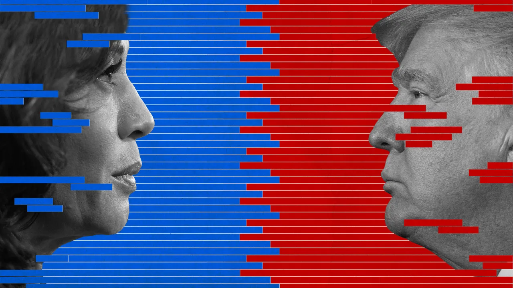

This project was created by both me and Alan Feria. Using data analysis and machine learning algorithms, we hope to explore the sentiment and opinions of presidential candidates with a data lens. Our github can be found here.
Project Summary
Our project aims to use text analysis to examine the sentiment surrounding the 2024 Presidential and Vice-Presidential candidates found in news outlets and social media leading up to the presidential election on November 2nd. We will do this by using sentiment analysis and examining the reliability of online text information. We will also create an AI bot that will use the online news and social media text to generate its own opinion based on web-scraped information. Our overall question is: How do different sources of media impact a voter’s view & opinion on the 2024 presidential election?
Problem Description
As the 2024 election approaches, misinformation and biased reporting on platforms like X, Instagram, and traditional outlets such as CNN, ABC, and Fox. This spread of information complicates public understanding. Our project aims to create user-friendly tools that evaluate the reliability of these sources while creating an AI bot that generates its own opinion based on these informational sources. We’ll explore how AI can generate informed perspectives on the election’s developments and how different news sources may impact a voter’s perspective on the election.
Project Goals
Develop a robust full stack system that inputs, stores, and visualizes voter opinion across various sources, including new articles and social media posts.
Design an algorithm that analyzes sites based on multiple factors and assigns a credibility score to each source.
Develop a modular AI bot that generates its own opinion based on scraped data across different platforms.
Develop an interactive dashboard that enables users to explore and visualize sentiment and opinion data in a user-friendly interface.
Timeline
We created this timeline to keep our team on track with the project goals.
Data Collection & Preprocessing
Identify and web scrape relevant text data from various news outlets and social media platforms (e.g., X, Instagram, CNN, Fox).
Clean and preprocess the data, including tokenization, noise removal , and other text normalization techniques.
Develop a data pipeline to ensure continuous data collection leading up to the election.
Sentiment Analysis Implementation
Implement sentiment analysis algorithms to assess the sentiment in the collected texts, using tools like VADER, TextBlob, or machine learning-based models.
Create visualizations to represent the sentiment trends over time for each candidate and media source.
Begin preliminary analysis to identify patterns in sentiment across different media sources.
AI Bot Development
Develop and train the AI bot to generate opinions based on the collected and analyzed data.
Test the bot’s opinion generation capabilities, refining the model based on a ccuracy and relevance.
Reliability Assessment & Media Impact Analysis
Develop a framework to evaluate the reliability of different media sources, possibly using metrics such as source credibility, historical accuracy, and bias detection.
Analyze the relationship between media source reliability and voter sentiment, exploring how misinformation or bias might skew public opinion
Dashboard Development
- Integrate all components into a cohesive tool or platform, ensuring seamless interaction between the sentiment analysis, AI bot, and reliability assessments.
Current Progress
Data Collection and Preprocessing
Using Python and Selenium, tweets from both Donald Trump and Kamala Harris and popular hashtags such as #PresidentialDebate2024, #MAGA2024, and #KamalaHarris2024 were scraped. About 10,000+ enteries were obtained during critical election periods such as presidential debates, government news, and/or policy changes.
My main contribution was creating a X, formerly Twitter, scraper to obtian tweets from both candidates and hashtags metioned above. Web scraping data needed to be done through the course of a week to not let X discover my automate Selenium bot. Each data entry had critical information such as author, time, content, hashtags.
Cleaning the data was a critical step, entries were duplicated becuase of tweet replies. In order to prepare data for sentiment analysis, the text of the tweets needed to be void of repetitive, non-meaningful words such as an, the, a, it, etc. and punctuation. The R packages {tokenizers}, {tidyverse} and {tidytext} were used to tokenize the body of tweets.
Progress is pending…